新增商品
以最佳方式設定商品對於商店來說至關重要。請確保不要遺漏任何細節，例如顯示各種尺寸和顏色選項、提供詳盡的商品描述，以及新增吸睛的圖片。
若要新增商品，請前往 目錄 → 商品。點擊右上角的 新增 按鈕。
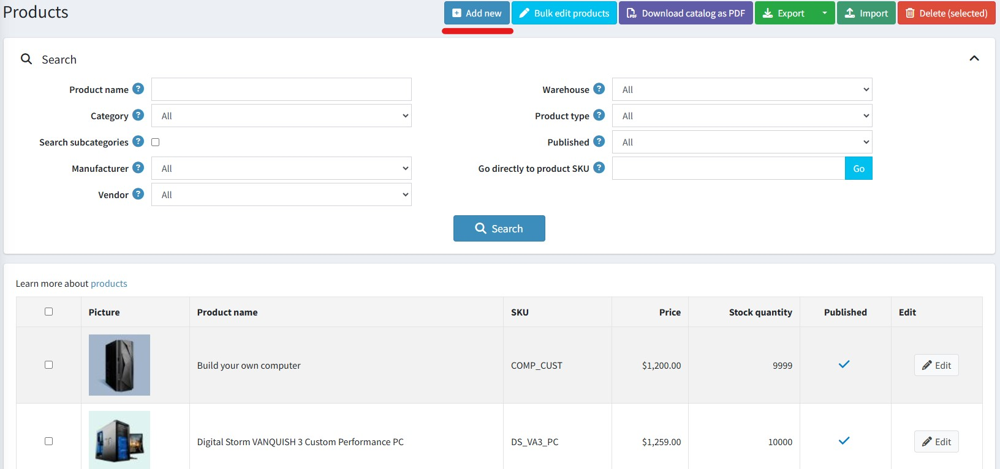
Note
您可以點擊 匯入 按鈕從外部檔案匯入商品。一旦您有了商品清單，便可點擊 匯出 按鈕將其匯出到外部檔案以進行備份。點擊 匯出 按鈕後，您將會看到一個下拉式選單，可讓您選擇 匯出為 XML (所有找到的) 或 匯出為 XML (已選取的)，以及 匯出為 Excel (所有找到的) 或 匯出為 Excel (已選取的)。此外，還可以 將目錄下載為 PDF，以便將選取的商品列印成 PDF 檔案。若要從清單中移除商品，請選取要刪除的項目並點擊 刪除 (已選取的) 按鈕。
新增商品 頁面提供兩種模式：進階 和 基本（預設為進階模式）。您可以切換到基本模式，該模式僅會顯示必要欄位。
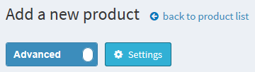
您也可以設定 基本 模式來選擇哪些欄位需要設為必填。若要執行此操作，請點擊切換開關旁邊的 設定 按鈕。此時會顯示如下的 設定 彈出式視窗：
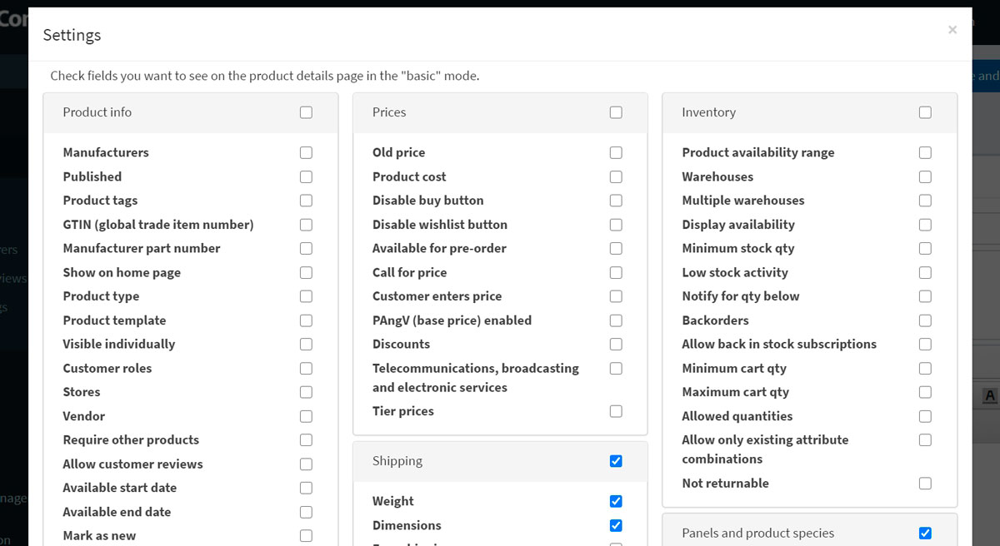
選取所需的欄位並點擊 儲存。請注意，在此情況下頁面將會重新整理。
商品資訊
請先在「商品資訊」(Product info) 面板填寫一般資訊：
輸入 商品名稱 (Product name)。
輸入商品的 簡短描述 (Short description)，這將顯示在型錄中。
輸入商品的 完整描述 (Full description)，這將顯示在商品詳細頁面上。您可以在此處加入文字、條列清單、連結或額外圖片。請務必撰寫詳細的說明，因為這會影響顧客的決策。
輸入商品 SKU。這是內部用於追蹤商品的庫存單位。這是您用來追蹤此商品的唯一內部識別碼。
類別。您可以將商品指派給任意數量的類別。您可以在 型錄 → 類別 (Catalog → Categories) 中管理 商品類別。
製造商。您可以將商品指派給任意數量的製造商。您可以在 型錄 → 製造商 (Catalog → Manufacturers) 中管理 製造商。
選取 已發佈 (Published) 讓商品在您的商店中顯示。
輸入 商品標籤 (Product tags) — 用於識別商品的關鍵字。請輸入標籤，並以逗號分隔。與特定標籤關聯的商品越多，在型錄頁面側邊欄顯示的 熱門標籤 雲中，該標籤看起來就會越大。閱讀更多關於如何管理商品標籤的資訊，請參閱 商品標籤 章節。
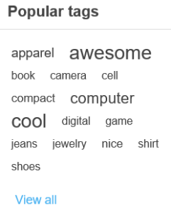
輸入 GTIN (全球貿易項目代碼)。這些識別碼包括 UPC（北美）、EAN（歐洲）、JAN（日本）以及 ISBN（圖書）。
輸入 製造商零件編號 (Manufacturer part number)。這是製造商為該商品提供的零件編號。
勾選 顯示於首頁 (Show on homepage) 核取方塊，將此商品顯示在商店首頁。建議用於最熱門的商品。如果勾選此項，商店擁有者還可以指定商品的 顯示順序 (Display order)。1 代表列表的最上方。
設定 商品類型 (Product type) 為 單一商品 (Simple) 或 組合商品 (Grouped)。閱讀更多關於商品類型的資訊，請參閱 組合商品 (變體) 章節。
如果您在 系統 → 範本 (System → Templates) 頁面安裝了自訂商品範本，「商品範本」(Product template) 欄位才會顯示。
如果您希望商品出現在型錄或搜尋結果中，請選取 單獨顯示 (Visible individually)；否則，該商品在型錄中將會隱藏，且只能從組合商品的詳細頁面存取。
選擇能夠在型錄中看到該商品的 顧客角色 (Customer roles)。如果不需要此選項且所有人皆可看到商品，則將此欄位留空。
Note
若要使用此功能，您必須停用下列設定：設定 → 型錄設定 → 忽略 ACL 規則 (全站)。閱讀更多關於存取控制清單 (ACL) 的資訊 here。
如果商品僅在特定商店銷售，請在 限制商店 (Limited to stores) 欄位中選擇商店。若不需要此功能，請將該欄位留空。
Note
若要使用此功能，您必須停用下列設定：型錄設定 → 忽略「單一商店限制」規則 (全站)。閱讀更多關於多商店功能的資訊 here。
供應商。您可以在 顧客 → 供應商 (Customers → Vendors) 中管理 供應商。
需要其他商品 (Require other products) 用於定義該商品是否需要搭配其他商品。如果需要，請選取 必要商品 ID (Required product IDs)，以逗號分隔輸入，並確保沒有循環參照（例如：A 需要 B，B 需要 A）。如果需要，可選擇 自動將這些商品加入購物車 (Automatically add these products to the cart)。
選取 允許顧客評論 (Allow customer reviews) 以啟用顧客評論此商品的功能。
定義商品的 可開始日期 (Available start date) 和/或 可結束日期 (Available end date)。
選取 標記為新品 (Mark as new) 以將商品標記為最近新增。這樣，您可以管理「新品」頁面上顯示的商品列表。您也可以使用 標記為新品。開始日期 (Mark as new. Start date) 和 標記為新品。結束日期 (Mark as new. End date) 欄位，指定商品顯示為新品的期間。
在 管理員備註 (Admin comment) 欄位中，輸入用於資訊目的的備註。此備註僅供內部使用，顧客無法看見。
價格
在 價格 (Price) 面板中，請定義以下項目：
價格 (Price)：使用預設貨幣設定價格。
Note
您可以在 設定 → 貨幣 中更改商店貨幣。閱讀更多關於貨幣的資訊 here。
舊價格 (Old price)：如果大於零，它將在前台網站顯示，並顯示在新的價格旁邊以供比較。
商品成本 (Product cost)：與生產該商品或服務相關的所有成本總和。此資訊不會向顧客顯示。
停用購買按鈕 (Disable buy button)：此選項對於「詢價」商品非常實用。
停用願望清單按鈕 (Disable wishlist button)。
開放預購 (Available for pre-order)：如果商品尚未在商店上架，但您希望允許顧客訂購，請勾選此項。前台網站將顯示「預購 (Pre-order)」按鈕來取代標準的「加入購物車 (Add to cart)」按鈕。當選擇此選項時，將會顯示 預購可用開始日期 (Pre-order availability start date) 欄位。請以 UTC 格式輸入商品的預計開始販售日期。當達到此日期時，「預購」按鈕將自動變更為「加入購物車」。
來電詢價 (Call for price)：勾選此項後，商品詳細資訊頁面將顯示「來電詢價」或「來電報價」，而不是原本的價格。這有助於您與顧客建立聯繫，並提供他們感興趣商品的額外資訊。
顧客輸入價格 (Customer enters price)：勾選此項表示必須由顧客輸入價格。當選擇此選項時，將顯示以下欄位：
- 在 最小金額 (Minimum amount) 欄位中，輸入價格的最低金額。
- 在 最大金額 (Maximum amount) 欄位中，輸入價格的最高金額。
啟用 PAngV (基礎價格) (PAngV (base price) enabled)：如果商品具有基礎價格，請選擇此項。根據德國法律 (PAngV)，這是必要的規定。例如，如果您販售 500 mL 的啤酒價格為 1.50 歐元，則必須顯示基礎價格：每 1 公升 3.00 歐元。當選擇此選項時，將顯示以下欄位：
- 商品數量 (Amount in product) — 所販售商品的數量。
- 商品單位 (Unit of product) — 上述數值的計量單位。
- 參考數量 (Reference amount) — 基礎數量。
- 參考單位 (Reference unit) — 上述數值的計量單位。
折扣 (Discounts)：了解如何設定折扣 here。
Note
如果您想要使用折扣，請確保 設定 → 設定 → 目錄設定 → 效能 (Configuration → Settings → Catalog settings → Performance) 面板中的 忽略折扣 (全站) (Ignore discounts (sitewide)) 設定已停用。
透過選擇 免稅 (Tax exempt) 來設定該商品是否免稅。否則，請從 稅務類別 (Tax category) 下拉式選單中，為此商品選擇所需的稅務分類。稅務類別可由商店管理者在 設定 → 稅務 → 稅務類別 中進行設定。
如有需要，請設定 階梯價格 (tier prices)。
貨運
在「貨運」面板中定義商品的貨運詳細資訊：
若該商品可以寄送，請勾選 貨運已啟用 (Shipping enabled)。此區塊將會展開以顯示更多詳細資訊。
設定用於貨運計算的商品參數：重量 (Weight)、長度 (Length)、寬度 (Width)、高度 (Height)。
Note
您可以在 設定 → 貨運 → 度量單位 中變更預設的度量標準。
免運費 (Free shipping)（若有）。
單獨寄送 (Ship separately)：若該商品應與其他商品分開寄送，請勾選此項。如果訂單中包含該商品的多個品項，所有品項都將會分開寄送。
額外運費 (Additional shipping charge)。
到貨日期 (Delivery date)：將顯示於前台商店中。
Note
您可以在 設定 → 貨運 → 到貨日期 中管理到貨日期選項。
Note
還有一個 啟用預估運費（商品頁面） (Estimate shipping enabled (product page)) 設定，可在 設定 → 設定 → 貨運設定 中啟用。 此設定允許在商品詳細資訊頁面上，透過彈出視窗根據顧客的寄送地址顯示預估的貨運資訊。
庫存
依照 here 所述，定義商品的庫存設定。
多媒體
在此面板中，您可以新增與目前商品相關的所有媒體內容。
圖片
在 圖片 面板中，您可以新增商品圖片。

您可以使用 上傳檔案 按鈕一次上傳多個圖片檔案。 圖片上傳後，您可以為每一張圖片設定以下數值：
- 在 Alt 欄位中，輸入「img」HTML 元素的「alt」屬性值。若留空，將使用預設規則（例如：商品名稱）。
- 在 Title 欄位中，輸入「img」HTML 元素的「title」屬性值。若留空，將使用預設規則（例如：商品名稱）。
- 定義圖片在商品頁面上的 顯示順序。1 代表列表的最上方。
Note
若要上傳 *.svg 格式的圖片，您需要啟用下列設定：

影片
在「影片 (Video)」頁籤中，您可以加入來自任何影片託管網站（例如 YouTube 或 Vimeo）的嵌入式影片連結。

YouTube 嵌入連結
- 在 YouTube 上找到您的影片並點擊「分享 (Share)」按鈕。
- 從彈出式選單中選擇「嵌入 (Embed)」。
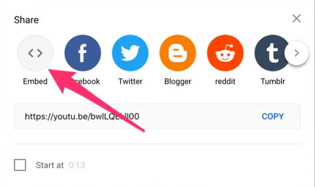
- 複製引號內的連結。
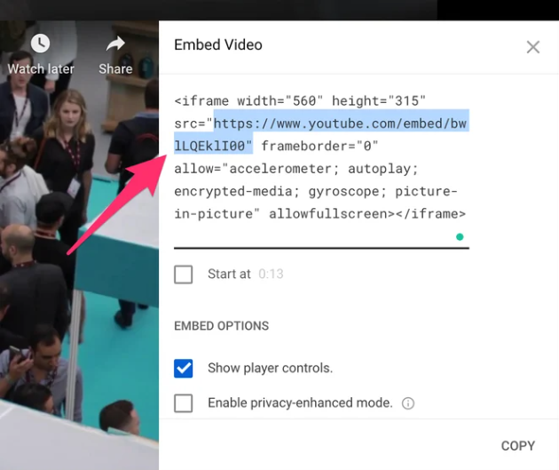
- 將此連結貼上到上述的「嵌入影片網址 (Embed video URL)」欄位中。請注意，影片必須設定為「公開 (Public)」或「不公開 (Unlisted)」才能嵌入；「私人 (Private)」影片無法嵌入。
Vimeo 嵌入連結
- 在 Vimeo 上找到您的影片並點擊「分享 (Share)」按鈕。
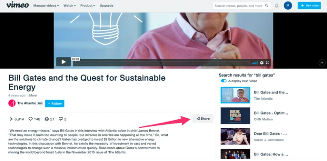
- 複製引號內的連結。
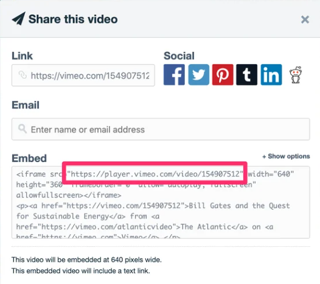
- 將此連結貼上到上述的「嵌入影片網址 (Embed video URL)」欄位中。
商品屬性
在 商品屬性 面板中，您可以新增商品屬性。深入了解關於商品屬性以及如何建立它們的相關資訊 here。
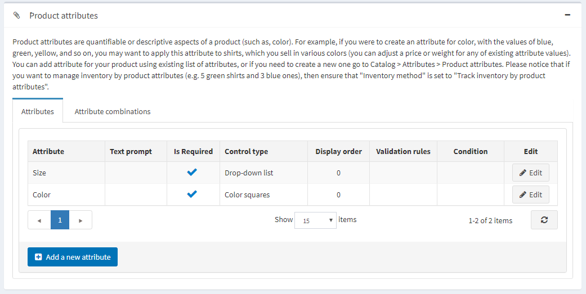
新增屬性
當您建立好屬性列表後，請點擊 Attributes（屬性）頁籤中的 Add a new attribute（新增屬性）。系統將會顯示如下的 Add a new attribute（新增屬性）視窗：
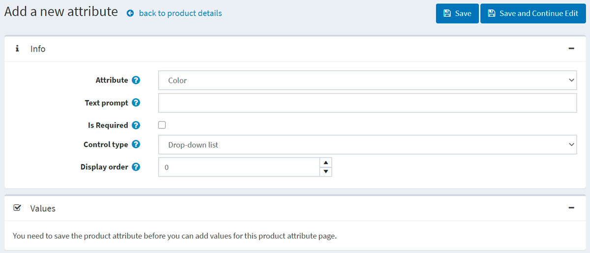
設定新屬性：
從 Attribute（屬性）下拉式清單中選擇一個屬性。
如果您希望在公開商店的屬性名稱前顯示特定文字，請填寫 Text prompt（文字提示）欄位。
勾選 Is required（必填），將此屬性設定為顧客必須填寫的項目。
定義此屬性的 Control type（控制項類型，例如：下拉式清單、單選按鈕清單）。
Note
針對「Date picker」（日期選擇器）控制項類型，您可以透過 All settings (advanced)（所有設定（進階））頁面中的 catalogsettings.countdisplayedyearsdatepicker 參數來設定要顯示的年份數量。例如，如果您設定為 0，則僅顯示當前年份；如果您設定為 5，則會顯示當前年份以及往後的 5 個年份。請閱讀關於如何在 All settings（所有設定）頁面進行相關設定。
定義此屬性在商品頁面上的 Display order（顯示順序）。1 代表顯示在清單的最上方。
點擊 Save and continue edit（儲存並繼續編輯）。 此時 Values（值）面板會顯示該屬性的預定義值。如有需要，請點擊值資料列中的 Edit（編輯）。
編輯屬性值
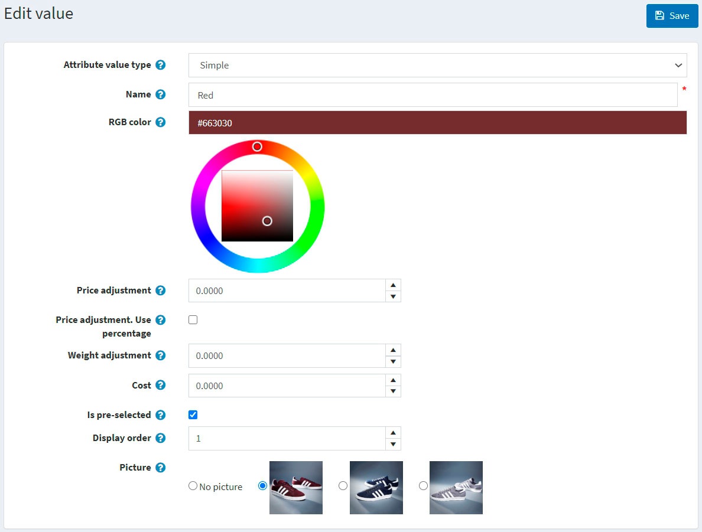
編輯屬性值細節如下：
- 選擇 屬性值類型 (Attribute value type)。共有兩種屬性值類型：簡單 (Simple) 與 關聯商品 (Associated to product)。如果您希望此屬性值為目錄中的另一個商品，並同時追蹤其庫存，請選擇 關聯商品 類型。在此，您可以使用 組合商品功能 (bundled products functionality)，讓顧客能將各種商品組合或套裝視為單一商品購買，且顧客將有機會使用下方描述的 顧客輸入數量 (Customer enters quantity) 欄位來設定所需的屬性數量。
若前一個設定為 關聯商品，將會顯示以下欄位：
- 關聯商品 (Associated product) 允許您選擇與此屬性關聯的商品。請使用 關聯商品 (Associate a product) 按鈕來選擇商品。
Note
請確保選擇關聯商品後沒有出現警告訊息。例如：
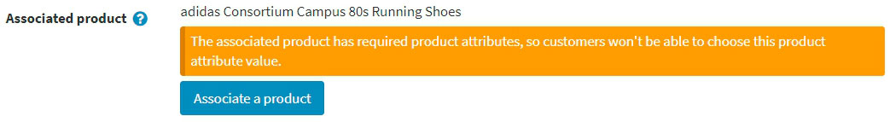
- 勾選 顧客輸入數量 (Customer enters quantity) 欄位，以允許顧客輸入該屬性（代表關聯商品）的數量。
- 若上述欄位未勾選，您可以指定 商品數量 (Product quantity)。允許的最小值為 1。
- 輸入屬性的 名稱 (Name)。
- 指定 RGB 顏色 (RGB color)，用於顏色方塊 (color squares) 屬性控制項。
- 在 價格調整 (Price adjustment) 欄位中，輸入選擇此屬性值時所套用的價格。例如，輸入 '10' 即增加 10 元。若勾選了 價格調整。使用百分比 (Price adjustment. Use percentage)，則輸入 10 代表 10%。
- 勾選 價格調整。使用百分比 (Price adjustment. Use percentage)，此選項決定是否將百分比套用於該商品。若未啟用，則使用固定數值。
- 使用 重量調整 (Weight adjustment) 欄位來指定選擇此屬性值時所套用的重量調整值。
- 指定 成本 (Cost) 欄位。屬性值成本是構成該值的所有組件之成本。這可能是向第三方供應商購買組件的採購價格，或是若組件為內部製造時，材料與生產流程的總成本。
- 若此屬性值應預設為勾選狀態，請選取 是否預選 (Is pre-selected) 欄位。
- 輸入屬性值的 顯示順序 (Display order)。1 代表屬性值清單中的第一項。
- 選擇與此屬性值關聯的 圖片 (Picture)。當點選（選取）此商品屬性值時，該圖片將取代主要商品圖片。
點擊 儲存 (Save)。
屬性條件
若有需要，請在「條件」面板中定義此屬性的條件。當選取了先前的屬性後，條件屬性才會出現；例如在服飾個人化選項中，只有在勾選「個人化」選項按鈕時，才會顯示輸入文字的方塊。
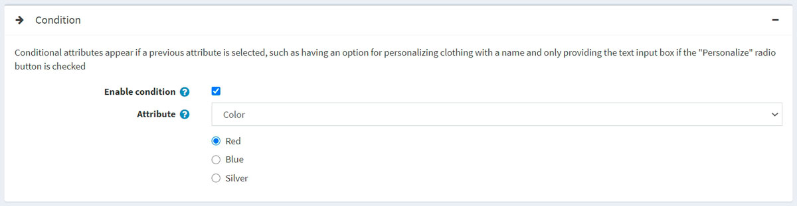
- 勾選 Enable condition 核取方塊以啟用條件。
- 選擇 Attribute 及其數值。當選取該數值時，條件即達成，該屬性便會顯示出來。
商品屬性組合
在「商品屬性組合」分頁中，您可以定義各種屬性組合，並為每一項組合指定以下資訊：
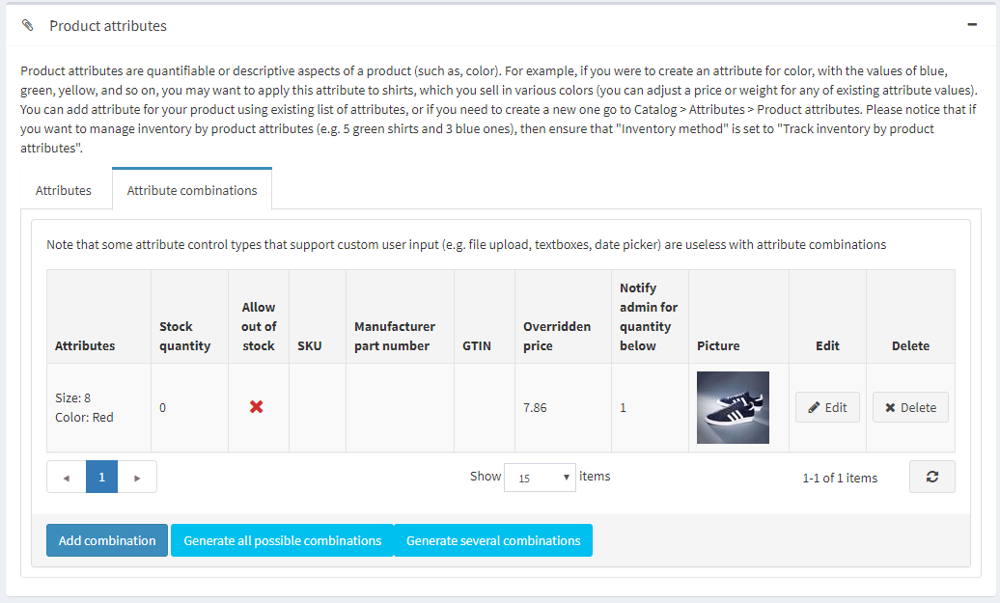
點擊 新增組合 按鈕來選擇新的組合並輸入其詳細資料：
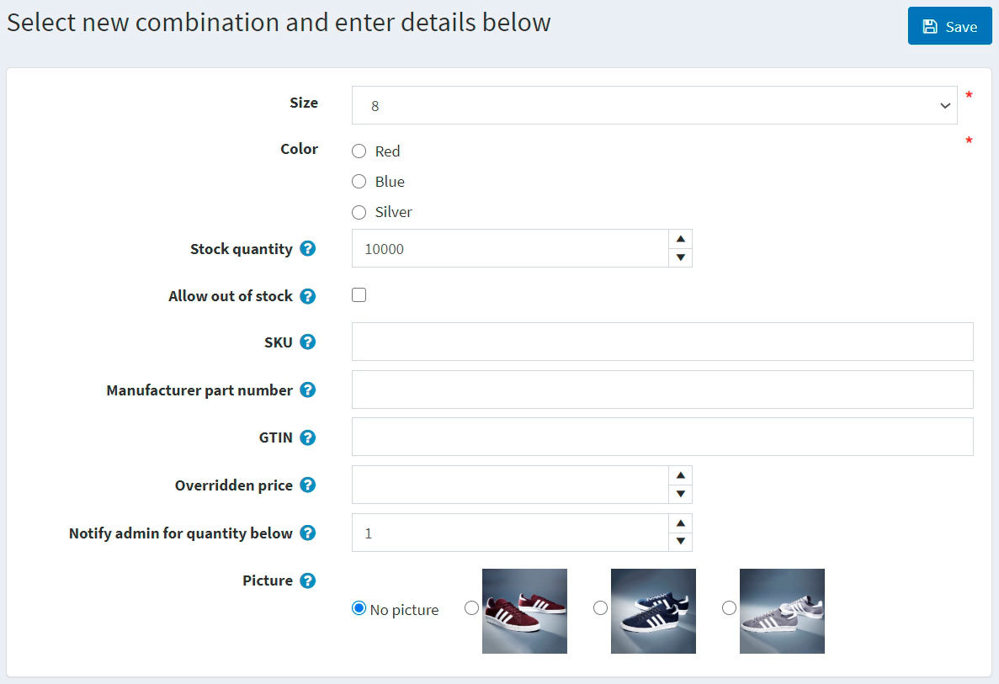
針對每個組合，請定義以下內容：
- 該組合中的屬性。
- 此組合目前的 庫存數量。
- 如果您已在商品詳細資料頁面啟用「透過屬性管理庫存」，當目前庫存數量低於（達到）最低庫存量時，您可以執行多種動作（例如：低庫存報告）。
- 允許缺貨購買：如果您希望允許顧客在無庫存時，仍能購買具有特定屬性的商品。
- SKU。
- 製造商料號。
- GTIN。
- 覆寫價格：如果具有特定屬性的商品價格與一般商品價格不同，可在此設定。例如，您可以透過這種方式提供折扣。若要忽略此欄位，請留空。
Note
當指定此欄位時，所有其他已套用的折扣將會被忽略。
- 在 庫存低於此數量時通知管理員 中，輸入當庫存低於該數值時，管理員將收到通知。
- 選擇與此屬性組合相關聯的 圖片。當選取此商品屬性組合時，該圖片將會取代主要商品圖片。
點擊 儲存。
Note
請注意，某些支援自訂使用者輸入的屬性控制類型（例如：檔案上傳、文字方塊、日期選擇器）在屬性組合中是無效的。
若要產生所有可能的組合，請使用 產生所有可能的組合 按鈕。或者使用 產生部分組合 按鈕，手動選擇某些屬性值來產生必要的組合。
規格屬性
規格屬性是指商品的各項特徵，例如螢幕尺寸或 USB 連接埠數量，這些特徵會顯示在商品詳細頁面上。規格屬性可用於在商品分類頁面中篩選商品。深入瞭解關於規格屬性 here 的資訊。
Note
與商品屬性（product attributes）不同，規格屬性僅用於顯示資訊。
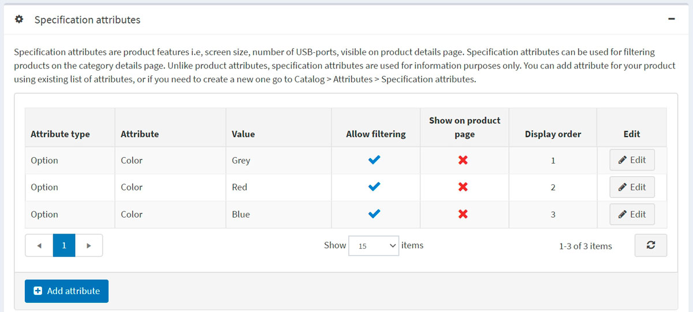
在「規格屬性」面板中，您可以新增規格屬性。
Note
您可以使用現有的屬性清單為商品新增屬性，或者如果您需要建立新的屬性，請前往 目錄 → 屬性 → 規格屬性。
若要新增屬性，請點擊 新增屬性 按鈕並填寫「新增商品規格屬性」區段：
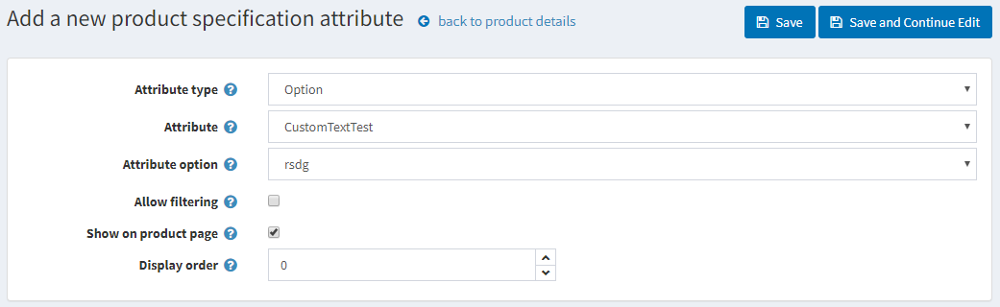
- 從下拉式選單中選擇 屬性類型。
- 從預先建立的屬性清單中選擇 屬性。
- 選擇 屬性選項。
- 若有需要，請勾選 允許篩選，以便在商品分類頁面上透過此選項進行篩選。
- 選擇 在商品頁面顯示，讓該屬性在商品頁面上可見。
- 設定屬性的 顯示順序。1 代表位於清單的最上方。
點擊 儲存。
商品類別
定義商品是否為：
SEO
為商品頁面定義下列 SEO 參數：
- 搜尋引擎友善網頁名稱 (Search engine friendly page name) — 搜尋引擎使用的頁面名稱。如果您留空，商品頁面 URL 將會以商品名稱來產生。如果您輸入 custom-seo-page-name，則會使用以下自訂 URL：
http://www.yourStore.com/custom-seo-page-name。 - Meta 標題 (Meta title) — 網頁的標題。
- Meta 關鍵字 (Meta keywords) — 與商品相關、最重要主題（關鍵字與關鍵片語）的簡潔清單。這些詞彙將會被加入到商品頁面的頁首。
- Meta 描述 (Meta description) — 商品的簡短描述，將會被加入到商品頁面的頁首。
閱讀更多關於 SEO 的資訊 here。
相關商品與交叉銷售
依照 here 的說明設定相關商品與交叉銷售。
已購買訂單
若要查看該商品曾被購買的訂單列表，請前往「已購買訂單」（Purchased with orders）面板。在此，您可以檢查訂單狀態並查看訂單詳細資料。
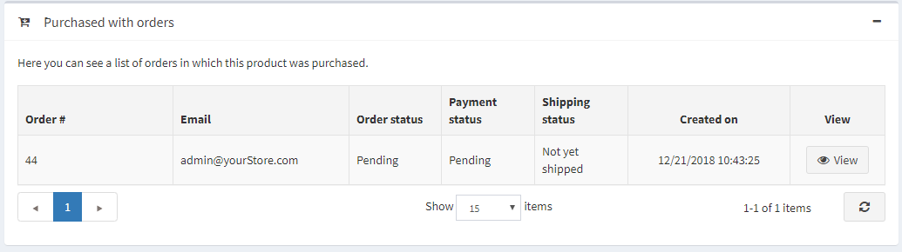
庫存數量異動紀錄
在此頁籤中，您可以檢視該商品所有的數量變更記錄，以及包含該商品的訂單。
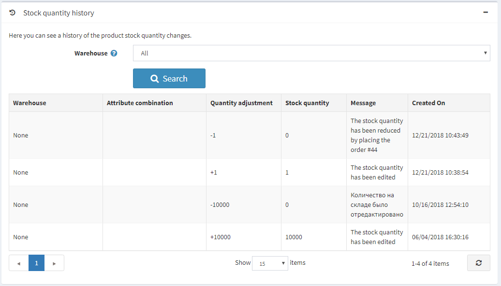
設定商品頁面
以下章節說明了商品頁面的設定：商品欄位、商品頁面 以及 分享。